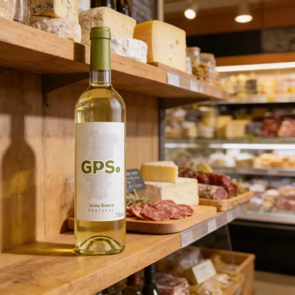
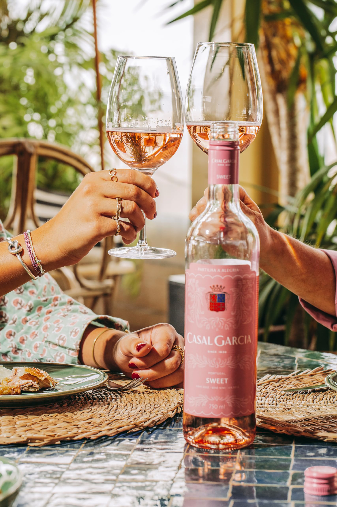

Seleção de vinhos | Indicações
O vinho é uma das bebidas mais antigas e apreciadas do mundo, símbolo de celebração, cultura e tradição. Produzido a partir da fermentação das uvas, ele se apresenta em diferentes estilos, cores e aromas, cada um com características únicas.
Tipos de vinho
- Vinhos tintos — possuem sabores mais intensos e combinam com pratos mais encorpados.
- Vinhos brancos — geralmente apresentam sabores mais leves e refrescantes.
- Vinhos rosés — possuem características intermediárias entre tintos e brancos.
- Espumantes — possuem gás carbônico e são muito utilizados em celebrações.
Vinho Tinto Encorpado

Combina com carnes vermelhas grelhadas ou assadas | Ideal para massas com molhos vermelhos intensos
Vinho Tinto Leve
Combina com aves e carnes de porco mais leves | Cai bem com pizzas e pratos com cogumelos
Vinho Branco Seco

Combina com peixes, frutos do mar e camarão | Ideal para massas com molhos brancos ou cremosos
Vinho Rosé

É versátil para saladas, petiscos fritos e comida japonesa
Espumante (Brut ou Moscatel)
O Brut limpa a gordura de frituras e petiscos | O Moscatel (mais doce) acompanha sobremesas à base de frutas